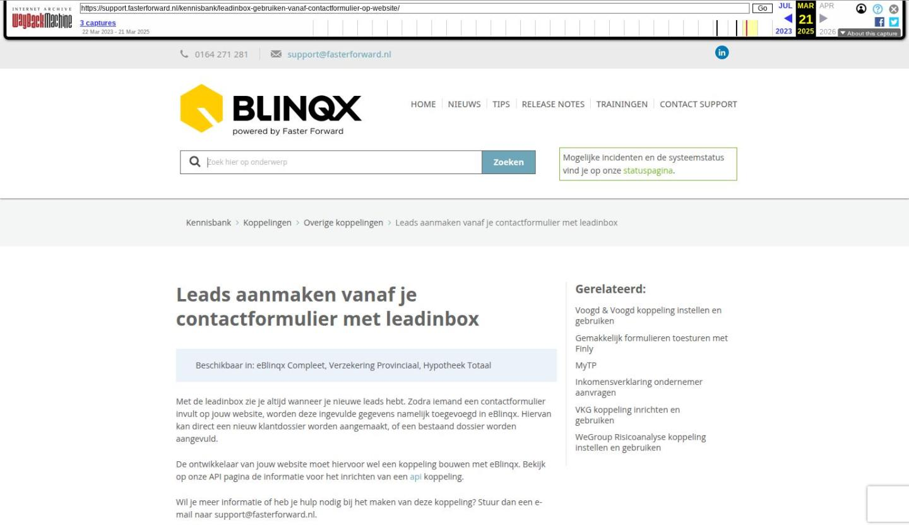

Leads aanmaken vanaf je contactformulier met leadinbox

Tekstinhoud
Leads aanmaken vanaf je contactformulier met leadinbox | Support
---
Leads aanmaken vanaf je contactformulier met leadinbox
Beschikbaar in: eBlinqx Compleet, Verzekering Provinciaal, Hypotheek Totaal
Met de leadinbox zie je altijd wanneer je nieuwe leads hebt. Zodra iemand een contactformulier invult op jouw website, worden deze ingevulde gegevens namelijk toegevoegd in eBlinqx. Hiervan kan direct een nieuw klantdossier worden aangemaakt, of een bestaand dossier worden aangevuld.
De ontwikkelaar van jouw website moet hiervoor wel een koppeling bouwen met eBlinqx. Bekijk op onze API pagina de informatie voor het inrichten van een api koppeling.
Wil je meer informatie of heb je hulp nodig bij het maken van deze koppeling? Stuur dan een e-mail naar support@fasterforward.nl.
Nieuwe leads verwerken
Matching inregelen door implementerende partij
Statussen
Status 'Aanvullingen vereist' verwerken
Nieuwe leads verwerken
Op het dashboard bevindt zich bij 'binnengekomen berichten' de inbox van de nieuwe leads (suspects) die via een contactformulier op de website binnen kunnen komen.
Matching inregelen door implementerende partij
Om te zorgen dat een klantdossier niet dubbel wordt aangemaakt, worden de gegevens van het contactformulier vergeleken met de klantdossiers in eBlinqx. In eBlinqx stellen wij in op welke criteria deze match gemaakt moet worden. De beschikbare criteria zijn:
Initialen, voornaam, achternaam, geslacht, geboortedatum, BSN, straatnaam, postcode, huisnummer, huisnummer toevoeging, plaatsnaam, e-mailadres en kantoor. Hier kan een keuze in gemaakt worden. Mochten de criteria overeenkomen met gegevens in een klantdossier dan wordt hiermee de koppeling gemaakt. Zijn er geen overeenkomsten dan wordt er een nieuw dossier aangemaakt.
Er zijn meerdere keuzes wanneer je de lead automatisch wilt laten verwerken naar een dossier. Dit is niet iets wat in eBlinqx zelf ingeregeld wordt, maar in de XML die vanuit het formulier naar eBlinqx gestuurd wordt. De implementerende partij stelt dit in. Voorbeelden hiervan zijn:
Verwerken van de lead, ongeacht het aantal personen, is per XML in te stellen door de implementerende partij;
Wel of niet automatisch verwerken bij 100% match, is per XML in te stellen door de implementerende partij;
Wel of niet automatisch verwerken bij geen match, is per XML in te stellen door de implementerende partij;
Indien er meerdere kantoren in een eBlinqxomgeving werken kan in de XML meegegeven worden dat er een match plaatsvindt waarbij het kantoor buiten beschouwing gelaten wordt.
Statussen
In de leadinbox staan alle binnengekomen berichten, zowel onverwerkte als verwerkte en alle leads worden standaard voorzien van een bepaalde status. Onderstaande statussen zijn mogelijk:
Aangevuld –> Bericht is door een medewerker aangevuld;
Niet-valide –> Het bericht is incorrect ingeschoten;
Verwerken mislukt –> Verwerken van het bericht is mislukt, neem contact op met support;
Aanvullingen vereist –> Er zijn matches gevonden op basis van eerder ingestelde matching criteria, en de lead zal handmatig verwerkt moeten worden;
Valide –> Het bericht is correct en wordt verwerkt tot dossier door het achtergrond proces
Processed –> Het bericht is verwerkt (tot dossier)
Wanneer je klikt op het wijzig icoon kom je op de volgende pagina waar gegevens aangevuld kunnen worden:
Status 'Aanvullingen vereist' verwerken
Leads met de status 'Aanvullingen vereist' kunnen worden gekoppeld aan een bestaand dossier, of er kan een nieuw dossier aangemaakt worden. Deze keuze maakt u door op het pijltje te klikken achter de lead. Een pop-up verschijnt, waar de overeenkomstige dossiers en personen staan met daarbij de optie om één van die dossiers te gebruiken voor de betreffende lead óf een nieuw dossier en persoon aan te maken.
De 'lead' is nu in eBlinqx verwerkt tot dossier, eventueel inclusief taak en workflow!
Laatste update: 10 juli 2024
Was deze informatie nuttig?
Ja Nee